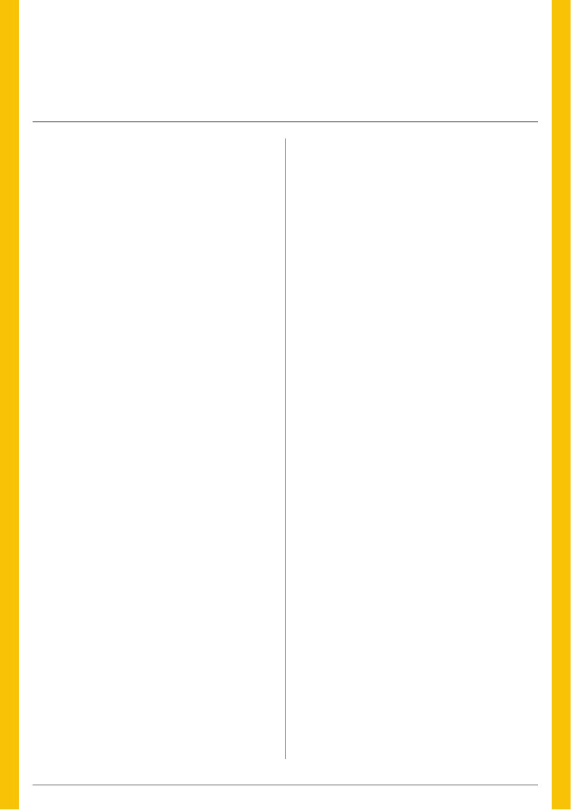

8 | Published since 1918 by the VAA – founded in 1892
There is something fitting about this edition of the
Australian Bee Journal.
A new look. A new editor. A new chapter for a journal
that has been documenting Australian beekeeping for
more than a century. But the change happening around the
Australian Bee Journal is much bigger than a new layout.
For generations, ours has been an industry that has largely
gone about its business quietly. We worked the bush, produced
honey, moved bees onto crops and played an enormous role in
Australian agriculture — often without the wider community
really understanding what we did. Bees and beekeepers were
somewhere over the back fence.
Today, beekeeping and pollination are increasingly being
discussed in agricultural boardrooms, government departments,
the media and the halls of Parliament.
Unfortunately, it has taken varroa to bring much of that attention.
Before talking about billions of dollars of agriculture, food
security and pollination-dependent crops, I think it is important that
we remember where this conversation starts: with beekeepers.
The VAA’s purpose is Beekeepers First.
That does not mean beekeepers at the expense of growers,
government, researchers or the wider agricultural community.
Quite the opposite.
It
means
recognising
that
without
healthy,
skilled,
commercially viable beekeepers, there will not be enough healthy,
professionally managed bees to provide the pollination services
agriculture increasingly requires. The beekeeper is not incidental
to pollination security. The beekeeper is what makes managed
pollination possible.
Varroa has fundamentally changed the economics and
operating requirements of keeping bees. Monitoring, treatments,
additional labour, record keeping, nutrition, queen replacement
and managing treatment resistance are becoming permanent
parts of running a beekeeping business.
Our own VAA briefing to government estimated an additional
varroa management burden in the order of $80–$100 per
hive annually when treatment, labour and increased queen
replacement are considered.
For a commercial beekeeper running 1,000 hives, that is
potentially another $80,000–$100,000 every year.
That is why supporting the beekeeper must remain at the
centre of the conversation.
The numbers explain why the conversation around us is
getting louder. Honey bees support billions of dollars of Australian
agricultural production every year. Here in Victoria, our VAA work
has estimated approximately $1.4 billion in annual farmgate
output from highly pollination-dependent crops, increasing
to approximately $2.9 billion when crops partially dependent
on honey bee pollination are included.1 Yet the commercial
beekeeping industry responsible for maintaining much of that
pollination capacity is comparatively tiny, currently sitting at
around 100 commercial beekeepers in Victoria. That imbalance
is important.
We are not asking government to protect the value of the
honey crop. We are asking government to recognise and help
protect the beekeepers and the pollination capacity behind
billions of dollars of Victorian agriculture.
In recent months, fellow VAA Board member Monré Meyer
and I have continued taking this case directly to Victorian
decision-makers. We have met with representatives of the
State Government and, separately, senior members of the State
Opposition, including Emma Kealy MP and Melina Bath MP.
Our message has deliberately remained consistent: Pollination
security should be above politics. Varroa is not simply another
beekeeping problem. It represents a structural change to Victoria’s
pollination system and, ultimately, to our food security. Our briefing
argued that beekeeping should no longer be viewed simply as a
small livestock industry, but as critical enabling infrastructure for
Australian horticulture and food production.
But again, infrastructure doesn’t operate itself. Behind every
professionally managed hive is a beekeeper making decisions,
doing the work, carrying the risk and paying the bills. We need to
retain those people.
Perhaps the biggest change ahead is one we cannot fully
see yet. Across Australia there is an enormous population of
unmanaged European honey bees living in trees, walls, sheds and
anywhere else they have found a home. Those bees have quietly
provided pollination to Australian agriculture for generations.
Nobody sent an invoice. Nobody booked the hive. Nobody
measured the frames.
And for the most part, nobody placed a value on the service.
The Australian Government reports that in other countries,
feral European honey bee populations fell by more than
90 percent following the establishment of varroa. Australia is
now beginning that transition. As unmanaged colonies decline,
growers who have historically benefited from incidental
pollination will increasingly need to rely upon professionally
managed colonies. We may only fully understand the value of
that invisible workforce as it disappears. And as unmanaged
colonies disappear, the value of the colonies that remain alive
— because somebody monitors them, treats them, feeds them,
breeds them and manages them — increases.
So too does the importance of the beekeeper.
Australia’s challenge has also changed extraordinarily quickly.
It was difficult enough learning to live with varroa. We are now
dealing with mites resistant to some of the synthetic treatments
that were supposed to provide our most convenient line of
defence.
Here in Victoria, Agriculture Victoria has confirmed mites
resistant to both pyrethroid and formamidine treatments. This
means some mites are resistant to all four currently permitted
synthetic miticide treatments.
President’s Report
From the Back Fence to the Front Line of Food Security
By Lindsay Callaway, President, Victorian Apiarists’ Association
Beekeeping itself is changing.
Beekeepers First
The conversation has changed
Taking that message to both sides of politics
The free service we never measured
A harder mite